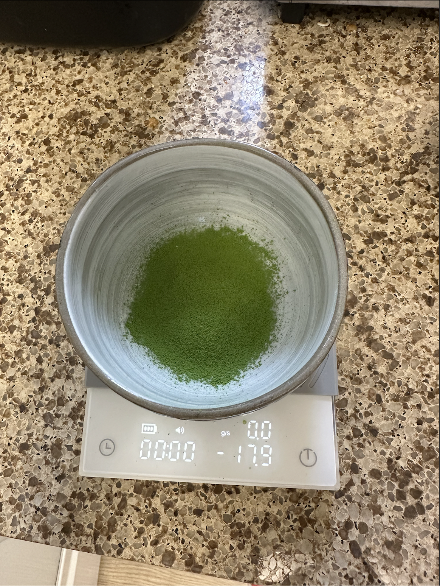
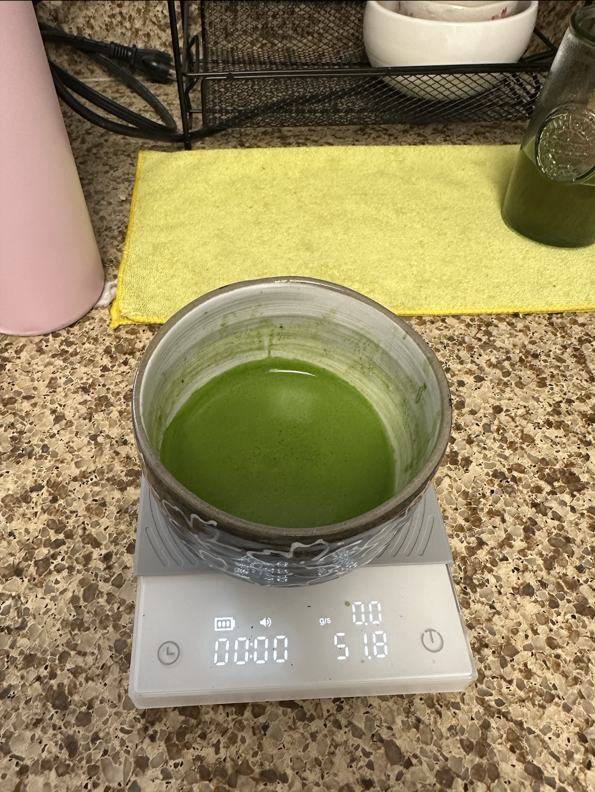
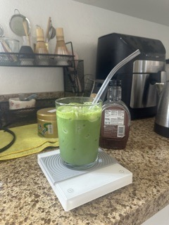

Matcha preparation is soothing and calming. Taking your time to sift, whisk, and pour your matcha
ensures that there's nutrients and quality in every cup you make. It's the best way to start my mornings because I feel myself more present in the moment.
Let me take you along and show you how to make matcha at home! Start by choosing a matcha blend.

The type of sweetner you use also affects the taste. You don't want to use too much so that
it doesn't mask the matcha flavor. Maple syrup makes it taste like a dessert, agave is very neutral (recommended), and honey makes it taste like a milk tea. Choose a sweetner or unsweeten it if you can handle how strong it is! 😝

There are so many fun and creative ways to enjoy a matcha! If you're feeling like
you want a sweet treat, feel free to add a cream top, banana pudding, pinch of salt, or cinnamon.
First, sift out 2 tsp of matcha. Then, pour 1/4 cup of water and whisk for 2 minutes in a "W" or "M" motion.
When you get to the last 30 seconds of whisking, slow down and whisk only the surface of the tea so that it will break down the bigger bubbles. This creates a creamy
microfoam that will make your matcha creamy! Fill your cup with LOTS of ice and add 3/4 cup of milk. Pour the matcha over and wow look how green it is 😍


